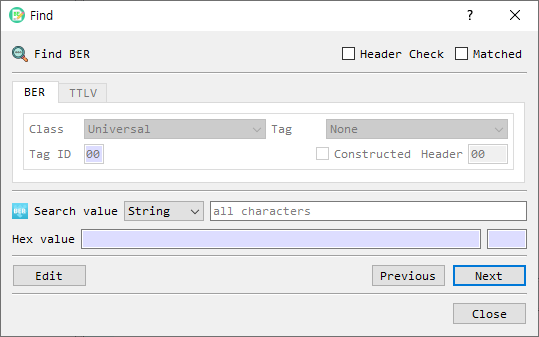

Find in BER or TTLV Data
The Find dialog searches the currently open BER or TTLV structure for a value. BerEditor enables the matching tab based on the format currently open in the main window.

Search options
| Control | Description |
|---|---|
| BER / TTLV tabs | Select the data format. The active document determines which tab is available. |
| Header Check | Enables the header filters. When unchecked, the search matches values regardless of their headers. |
| Matched | Limits the search to an exact value match. |
| Search value | Enter the value to find. |
| Value format | Selects the input representation. BER searches support String, Hex, Decimal, and OID; TTLV searches support String, Hex, and Decimal. |
| Hex value | Shows the converted hexadecimal bytes for the search value. Its length is displayed beside it. |
| Next / Previous | Searches forward or backward from the current selection. |
| Edit | Opens the selected BER or TTLV node for editing. |
| Close | Closes the dialog. |
BER header filters
With Header Check enabled on the BER tab, configure the optional header criteria:
- Class: Universal, Application, Content-Specific, or Private.
- Tag: Select a standard BER tag for Universal class. For other classes, enter a tag ID.
- Constructed: Match constructed values when selected.
- Header: Displays the generated one-byte BER header used by the search.
TTLV header filters
With Header Check enabled on the TTLV tab, enter a six-digit hexadecimal Tag and select a Type. The tag name is shown when recognized. Any searches all TTLV types for that tag; otherwise the generated header includes the selected type.
Search
- Open the BER or TTLV data in the main window. The dialog activates the corresponding tab.
- Enter the value and choose its format. The hexadecimal representation updates as you type.
- Optionally enable Header Check and set BER or TTLV header criteria. Enable Matched for exact matching.
- Select Next or Previous to move to a matching node. The node is selected in the main view.
- Select Edit to edit the selected node, or Close to dismiss the dialog.
If the value cannot be converted or no matching node exists, BerEditor displays a warning.